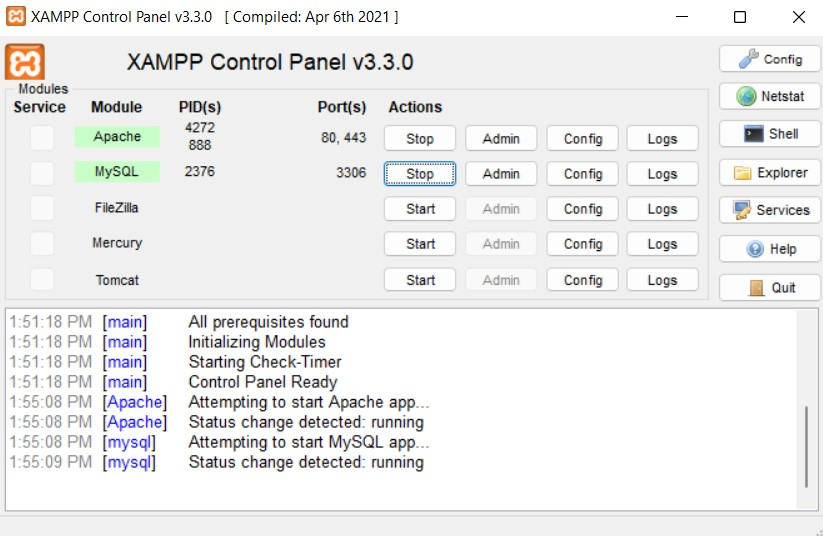

★★☆☆☆ These notes need more examples to make the topic clear
PHP
PHP (Hypertext Preprocessor) is an open source scripting language that runs on a server. It's used for web development and power systems like WordPress and Drupal.
Code Editors
To use and edit PHP install one of the following code editors:
PHP Requirements
In order to use PHP for web development, the following tools are necessary:
In the following sections, we will show you how to install and use PHP with Docker or XAMPP.
Docker
Docker is a tool that can be configured to run a PHP environment in a container. A container can be seen as a
virtual machine but lighter. The main advantage of using Docker locally is that everything is self-contained and the
website can be moved to the production server easily.
Requirements
Details
The following versions are used.
- PHP 8.1 with PDO
- Nginx latest
- Mysql latest
Usage
To create a PHP environment follow the following steps:
Clone repository.
git clone https://github.com/andrei-nita/docker-lemp lemp01
Configuration
Change credentials form the .env file.
Start the server
Start the server using the following command inside lemp01:
docker-compose up
or use the following command to start the server in detached mode:
docker-compose up -d
Create table
Navigate to phpmyadmin at http://localhost:8081.
Create a table named db_tbl. This table is used in app/index.php.
Populate the table with two colums: id and title.
Run the application
Navigate to http://localhost
Code
Place your code inside the app folder.
Stop containers
Use CTRL+C to stop the Docker containers or if you used docker-compose up -d, use the following command:
docker-compose stop
Remove containers
docker-compose down
More
XAMPP
XAMPP is a free web server software package that allows you to develop and test your web applications on a local computer.
Download
Install
Install XAMPP on your computer, for example inside C: with the default settings.
After installing, open XAMPP and activate the Apache and MySQL services, like in the picture below:

Now navigate to http://localhost.
Run PHP
Assuming XAMPP is installed at C:\xampp, you can run PHP scripts by placing them into htdocs folder. For example, create an index.php file at C:\xampp\htdocs\myphp\index.php, and insert the following code:
<?php
echo "PHP 😀!";
?>
Navigate to http://localhost/myphp/index.php and you should see the following message:
echo "PHP 😀!";
Hello World
The lines that start with // are comments. They are ignored by the PHP interpreter and, in general, are just useful for humans to make the code more readable.
In a file with .php extension, place the following code:
<!DOCTYPE html>
<html lang="en">
<head>
<title>Hello World</title>
</head>
<body>
<?php
// single-line comments are like this
# or like this (less common)
/* double-line comments are written
like this, so that you can keep typing
and typing
*/
?>
<?php
// Prints Hello World! to stdout.
// Stdout is the web page if running in a browser.
echo('Hello World!');
print('Hello World!'); // The same as echo
// echo and print are language constructs,
// and the parentheses are optional.
echo 'Hello World!';
print 'Hello World!';
echo 100; // Echo scalar variables directly
?>
<br>
<?php echo "Hello World with line break!"; ?><br/>
<?php echo "Hello" . " World with concatenation!"; ?><br/>
<?php echo 1 + 1; // arithmetic?> <br/>
<?php
// Variable
$paragraph = '🧑💻👩💻🧑🏻💻👩🏻💻🧑🏼💻👩🏼💻🧑🏽💻👩🏽💻🧑🏾💻👩🏾💻🧑🏿💻👩🏿💻';
?>
<?php echo $paragraph; // output the variable content ?><br/>
<?php echo '$paragraph'; // output $paragraph ?><br/>
<?php echo "$paragraph"; // output the variable content ?><br/>
</body>
</html>
Output
Hello World!Hello World!Hello World!Hello World!100
Hello World with line break!
Hello World with concatenation!
2
🧑💻👩💻🧑🏻💻👩🏻💻🧑🏼💻👩🏼💻🧑🏽💻👩🏽💻🧑🏾💻👩🏾💻🧑🏿💻👩🏿💻
$paragraph
🧑💻👩💻🧑🏻💻👩🏻💻🧑🏼💻👩🏼💻🧑🏽💻👩🏽💻🧑🏾💻👩🏾💻🧑🏿💻👩🏿💻
Explanation:
- The
<?phptag starts the execution of thePHPcode until the?>tag is reached. - multiple
<?php ?>tags are used to switch fromPHPtoHTMLcode. <br>is used to create a line break.- comments are not outputed by the
PHPinterpreter. - the difference between double quotes and single quotes is that double quotes can contain and interpret variables.
If your php file only contains PHP code, it is the best practice to omit the php closing tag to prevent accidental output.
Variables
<!DOCTYPE html>
<html lang="en">
<head>
<title>Variables</title>
</head>
<body>
<?php
$var1 = 10;
echo $var1; // 10
echo "<br />";
$var1 = "Ten";
echo $var1; // Ten
echo "<br />";
$var2 = "💻";
echo $var2; // 💻
$var1copy = $var1;
$var1 = 200;
echo "<br />";
echo $var1copy; // Ten
$var1ref = &$var1;
$var1 = 1000;
echo "<br />";
echo $var1ref; // 1000
?>
</body>
</html>
Output
10
Ten
💻
Ten
1000
Explanation:
- a variable in
PHPis created by using the$sign followed by the name of the variable. $var1copyis a copy of the value of$var1.$var1copyand$var1are two different variables, with different addressed in memory. In fact when$var1is assigned a new value,$var1copyis not changed.$var1refis a reference to the value of$var1. A reference is created with&sign.$var1refand$var1are two different variables, with the same addressed in memory. When$var1is assigned a new value,$var1refis changed.- the first assignement to
$var1is an integer value. The second assignement is a string value. InPHPvariables have dynamic types and can hold any data type.
Using references (pointers) is a good way to avoid copying the values of variables, which makes the code more efficient.
Static Modifiers
<?php
class Player
{
protected static $identity = 'Player';
public static function identity_test()
{
echo 'identity: ' . self::$identity . "<br />";
echo 'get_class: ' . get_class() . "<br />";
echo 'get_called_class: ' . get_called_class() . "<br />";
}
}
class TennisPlayer extends Player
{
protected static $identity = 'Tennis Player';
}
Player::identity_test();
echo "<br />";
TennisPlayer::identity_test();
?>
Output
identity: Player
get_class: Player
get_called_class: Player
identity: Player
get_class: Player
get_called_class: TennisPlayer
Explanation
In the code above, TennisPlayer overrides the identity property of Player.
But when TennisPlayer::identity_test is called, the Player identity is returned.
This happens because the identity is accessed inside Player Class using self, which always refers to the parent class.
self acts like a shared variable between the parent and the child class.
To get the TennisPlayer identity we need to use static instead of self, like in the next section.
Late Static Binding
<?php
class Player {
protected static $identity = 'Player';
public static function identity_test() {
echo 'identity: ' . static::$identity . "<br />";
echo 'get_class: ' . get_class() . "<br />";
echo 'get_called_class: ' . get_called_class() . "<br />";
}
}
class TennisPlayer extends Player {
protected static $identity = 'Tennis Player';
}
Player::identity_test();
echo "<br />";
TennisPlayer::identity_test();
?>
Output
identity: Player
get_class: Player
get_called_class: Player
identity: Tennis Player
get_class: Player
get_called_class: TennisPlayer
Explanation
Because of the static::$identity, each class accesses its own static property., unlike the previos example, where only the Player identity was accessed.